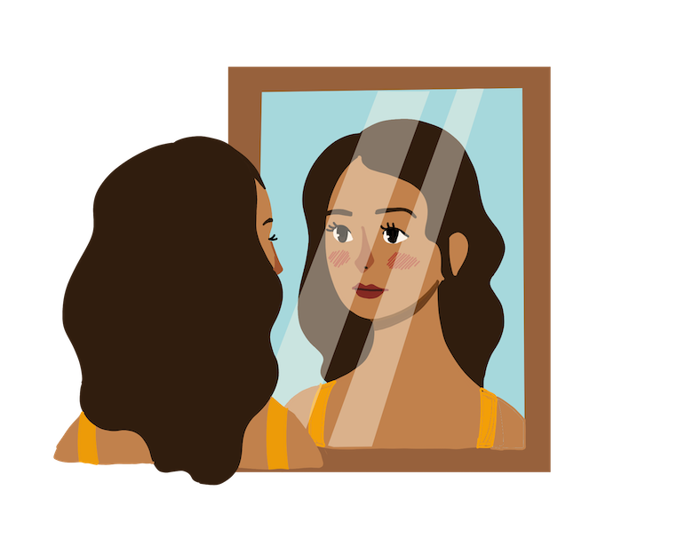
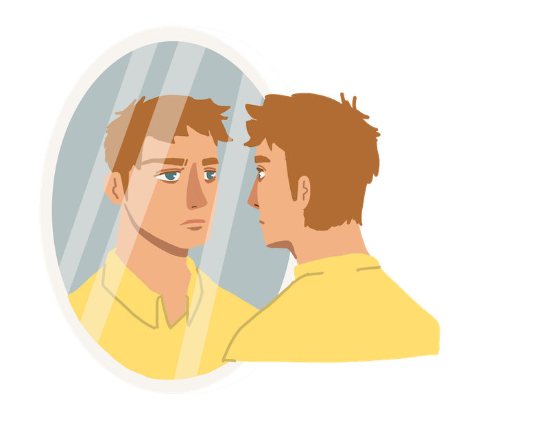

Chapter 1: The Letter
Dear Luke,
You have been my compass in life. You have shown me that even if I do not know where I am heading, there will always be you as a light to guide me. I will always find you, for, without you, I am lost.
Sincerely,
Moriah
The night before the high school graduation, Selah wrote a letter to Luke to confess her feelings. She put the letter inside the present where she planned to give it during dinner. The following day, Selah woke up with joy in her heart, and she went straight to take a shower and prepare for the special day. With her dark curly hair, she rubbed a moisturiser so it would stay soft and shiny. Then, she proceeded to pluck her thick black eyebrows as she put make-up on her round- shaped face. Two hours later, she was still figuring out which dress fitted her skinny body.
“Selah!” called mother “ You have to go down now, or there will be no graduation for you.”
“I’m coming, Momma,” replied Selah.
After hearing her momma, she instinctively picked the yellow dress, perfectly fitted her warm skin tone and grabbed her favourite white sneakers to pair.
Selah went downstairs and grabbed her graduation gown. She and her momma went to the school quickly, for they were running late. Then, she ran inside the gymnasium to join the rest of the graduating class.
Few hours after the ceremony, Selah and her momma went home because they invited Evans to celebrate. The Moriah and the Evans have known each other since their child went to kindergarten. After the death of Selah’s father, her momma decided to move back to her country, which is in the city of Amsterdam.
As Selah’s momma prepared the food, the Evans family arrived. Selah suddenly felt her heartbeat fast like she was running a track. Despite the anxiety, she welcomed them with cheerfulness. Mrs Evans went straight to the kitchen to help Mrs Moriah while Mr Evans went to the backyard to chill for a while. Selah called Luke, Evans’s only son, to her bedroom so she could give her the present. Selah’s palms started to sweat like a river, for she could not contain her nervousness.
“Close your eyes and give me your hands.” said Selah, “I have something to give to you.”
Luke closed his eyes, and he felt a box in his hands.
“Open your eyes now!” Selah said.
A small blue wrapped box was in his hands with his charming green eyes, and he immediately opened it and looked at her dazzling hazelnut eyes.
Chapter 2: Hidden Feelings
The night before the graduation, Luke could not sleep. He has been turning sideways on his bed, yet something in his mind is bugging him for quite some time.
“What if I get rejected?” frustrated Luke said.
He closed his eyes and made himself down before his alarm went off. On the day of graduation, his eyes were puffy as clouds because he wasn’t able to sleep properly. He got up to his bed and straight off to shower his toned body since he was an athlete in their school. He brushed his brunette wavy hair and sprinkled his favourite beach scented perfume on his white long sleeves. Getting out of his room, his proud parents awaited him downstairs to take a picture of him. Evans was disciplined when it came to being punctual, so they arrived at the ceremony 30 minutes early.
As Luke entered the room, his football teammates greeted him and made girls capture their energy of masculinity. The principal started to speak, and the graduating students began to form a line outside the auditorium. Luke kept looking at the back of the line until Selah arrived, rushing through the line. When Luke saw Selah, he was stunned by her yellow dress. While he was standing in the line, one thing was in his mind: he has to confess his feelings to Selah. As soon as the ceremony finished, Luke tried to find Selah to have a conversation with her, but she left early with her mother.
Heading to the car, Mrs Evans mentioned that they were going to have dinner at Moriah’s. Hopeless Luke seemed to gain his excitement on confessing his feelings towards Selah. That night, the Evans family arrived on time. Selah opened the door and welcomed them.
“Luke!” Selah said.
Luke was calming himself down every time he saw Selah. His heart could not resist gallops. He quickly followed Selah to the bedroom.
At the back of his head, “This is it, my man! You can do it! Be brave!”
Yet Selah asked her to close his eyes. The moment he opened his eyes, a gift met his eyes, and a letter fell. He picked up the letter and read it.
Luke said, “Selah, I was supposed to tell you about how you have been bothering me at night, for I could not stop thinking about you.”
Luke hugged Selah and whispered,“I love you.”
As the full moon bloomed, Luke and Selah had finally evolved in time.
Chapter 3: Selah Moriah
A decade after, Luke and Selah were still together. They both decided to live together under one roof in the same city where they had met.
After graduating from college, Selah immediately got a job in business marketing. And ever since she started to work in the company, she had become equipped and expertise in her career. Everything changed from the moment she graduated from university, and as she reached her peak in her career, her mother died. Throughout her ups and downs, Luke had been with her infallibly.
Her drive to strive for better results a strong-willed woman who pursued what she wanted. She succeeded. With all the rays of success in her life, her relationship seemed to be surrounded by clouds of doubt. Selah had a hard time trusting Luke even though he had never left her. The love she had for him faded away as her parents left her alone. A brighter future was unknown to her vision. She always thought that every person she loved would leave her. The walls of emptiness and grievances in her heart made her push away Luke in her life.
Chapter 4: Luke Evans
Luke Evans had become a coach in his old middle school. Inspiring and training athletes had been his drive-in life. After every training session, he went home as quickly as possible, so when Selah came home, she could have dinner. Supporting Selah in her career was what he did out of his love for her. Though most of the nights, he fell asleep waiting for her, he insisted on continuing his simple gesture to his love, Selah. Luke did not complain about his stability in his career, for he felt content in life. One time, he went home and found himself lonely and alone. He asked himself why he felt this.
All along, he realised years went by, and their relationship had been fading away. They focused on different things. He felt drained and exhausted after all the outpouring of his love and service toward Selah. He forgot to take care of himself. He forgot who he was. Sitting on his brown leather couch, he looked at the wall above the furnace, where Selah framed the first letter to him. Contemplating what had happened to them, he recognised they grew apart and not together.
He pulled out the drawer near the couch and grabbed his pen and paper, and write,
Dear Selah,
I have been your compass even though I am lost
I have been your light even though I am in my darkest moment.
I have found you. But I have lost myself.
Growth has been a change in our lives
Yet growth has told us that there are two paths We wander through the journey
We strive through the journey
We succeed in the journey we have
We grow but not together
I love you until the end of our different journey.
Love,
Luke